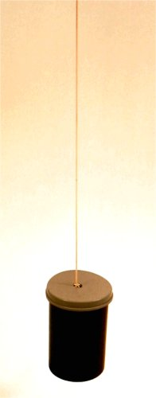
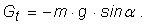
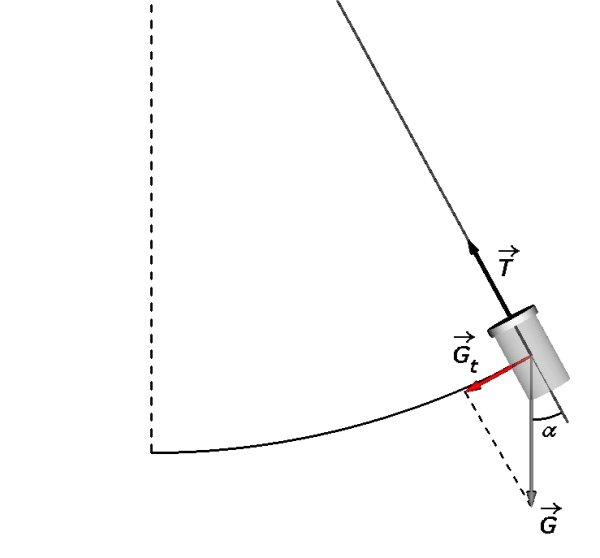
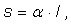
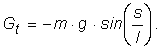
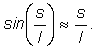
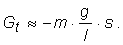
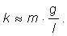
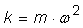
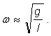

Oscilatorul mecanic
A.9. |
|
Pendulul gravitaţional |
 Provocarea 1A9−1
Provocarea 1A9−1
O cutie plină cu monezi este atârnată de un fir de aţă subţire, dar tare (figura 1A9−1).
| 
| Fig. 1A9−1. Oscilator realizat dintr−o cutie plină cu monezi, atârnată de un fir subţire, dar tare. |
Măsurând doar înălţimea cutiei şi lungimea firului, poţi oare anticipa perioada de oscilaţie a acestui oscilator real?
O cutie plină cu monezi este un corp relativ dens (masă mare în volum mic). Mişcarea sa în timpul oscilaţiilor va fi influenţată nesemnificativ de rezistenţa
la înaintare prin aer.
Totodată, un fir subţire, dar tare, este un corp uşor, foarte flexibil şi aproape inextensibil. Scos din poziţia de echilibru, acest sistem oscilează,
gravitaţia având un rol esenţial.
 Numim pendul gravitaţional un sistem alcătuit dintr−un corp relativ dens, ataşat de un fir cu masă neglijabilă, foarte flexibil şi aproape
inextensibil.
Numim pendul gravitaţional un sistem alcătuit dintr−un corp relativ dens, ataşat de un fir cu masă neglijabilă, foarte flexibil şi aproape
inextensibil.
Deoarece firul unui pendul gravitaţional este aproape inextensibil, centrul de greutate al corpului atârnat de fir se mişcă, practic, pe un arc de cerc
(de o parte şi cealaltă a poziţiei verticale de echilibru).
Când firul formează unghiul a cu verticala, singura forţă care poate determina modificarea acestui unghi este componenta
tangentă la cerc a greutăţii corpului (figura 1A9−2):


Fig. 1A9−2. Oscilaţiile unui pendul gravitaţional au loc sub acţiunea componentei tangenţiale a greutăţii acestuia.
Coordonata curbilinie s, măsurată în lungul arcului de cerc descris de centrul de greutate al pendulului, faţă de poziţia de echilibru, este:

l fiind raza cercului descris de centrul de greutate al pendulului (unghiul a fiind exprimat în radiani).
Aşadar, relaţia dintre forţa de revenire şi coordonata curbilinie s este:

Aceasta nu este o forţă de tip elastic! Oscilaţiile unui pendul gravitaţional nu ne aşteptăm să fie armonice.
Totuşi, cu cât amplitudinea unghiulară a pendulului gravitaţional este mai mică, cu atât mai bună este aproximaţia (vezi tabelul 1A6−1):

Aşadar, pentru amplitudini mici, relaţia dintre forţa de revenire şi coordonata curbilinie a pendulului gravitaţional este, cu bună aproximaţie:

Aceasta reprezintă, cel puţin aproximativ, o forţă de tip elastic, constanta de elasticitate fiind:

Aproximând mişcarea pendulului gravitaţional ca fiind armonică (pentru care ), rezultă pulsaţia aşteptată a
pendulului gravitaţional:

Aşadar, perioada aşteptată a pendulului gravitaţional este:
aproximaţia fiind cu atât mai bună, cu cât amplitudinea unghiulară este mai mică.
Trebuie doar să măsori distanţa dintre punctul de suspensie al pendulului şi centrul de greutate al corpului (raza arcului de cerc descris de centrul de
greutate al pendulului) şi, conform relaţiei (1), poţi anticipa perioada de oscilaţie a pendulului gravitaţional!
 Activitatea experimentală 1A9−1
Activitatea experimentală 1A9−1
Realizează un pendul gravitaţional şi măsoarâ−i perioada de oscilaţie (cronometrând mai multe oscilaţii complete).
Poţi folosi acest cronometru!
Compară perioada măsurată cu cea dată de relaţia (1).
Deşi oscilaţiile pendulului gravitaţional nu sunt riguros armonice, "potrivirea" perioadei măsurate cu cea aşteptată conform relaţiei (1) este remarcabilă,
modelul oscilatorului armonic dovedindu−şi încă o dată utilitatea!